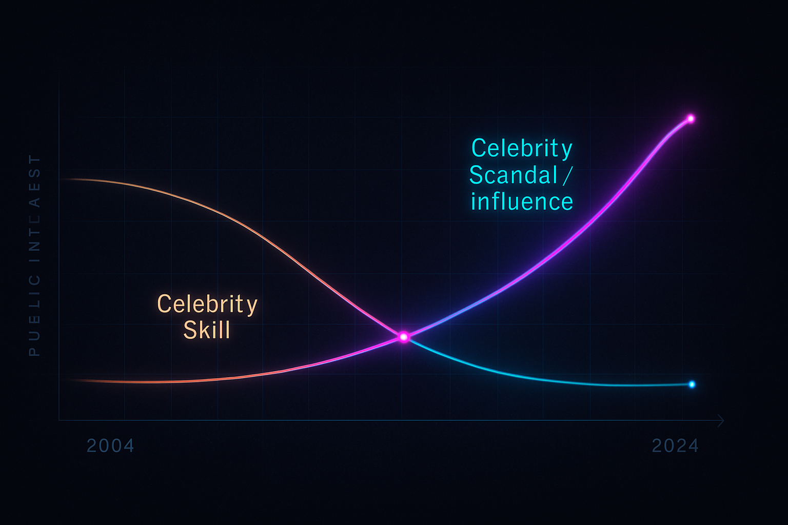

Stage 1: The Great Rupture
Witness the seismic shift. A world forged in steel and sweat gives way to one illuminated by the glow of screens. This is the genesis of the Empire of Likes, born from the twilight of one age and the dawn of another, where the clamor of factories fades into the whisper of the scroll.
Part 0: Twilight of the Producers
Once, the rhythm of a nation was the roar of its foundries, the sweat of its makers. Now, a new pulse quickens – the flicker of ring lights, the dance of curated personas. We invite you to slide between two eras, to feel the ground shift beneath your feet.
1965: The Forge of Nations
2025: The Factory of Views
When a civilisation’s prime export becomes attention, decadence ceases to be a moral failing and becomes the P&L strategy.
“Rome paid its soldiers in silver; we pay ours in followers.”
Part 1: Group-Chat Apocalypse
The old gods of the market tremble. In Brooklyn apartments, illuminated by the cold light of stock tickers bleeding red, a new kind of augury unfolds – not in the entrails of beasts, but in the endless scroll of group chats. Here, wit, despair, and the perfectly timed GIF become the currency of a dawning unease.

Interactive: The iMessage Thread
(Witness the digital lamentations unfold.)
"The S&P broke support at 5100 while Kunal broke the last taboo of optimism. He called America Rwanda with Wi-Fi, and the insult stung not because it was cruel but because it felt prematurely accurate." – An excerpt from the digital ether.
Part 2: Snapchatting the Colosseum
Is this new? Or is history merely an infinite scroll itself, a feed of recurring human folly dressed in different digital robes? We time-warp to A.D. 80. The roar of the Colosseum. The glint of a gladiator's shield – now, imagine it sponsored by "Olympus Olive Oil." The grain dole, a precursor to your DoorDash credit. The spectacle, then as now, a potent sedative.
Interactive: Colosseum Filters
If dopamine is the new denarius, who, we must ask, truly controls the mint?
Stage 2: Forging the Attention Engine
Every empire needs an engine. Ours is not built of iron and steam, but of algorithms and eyeballs. Here, we dissect the invisible architecture of the attention economy – the ingenious designs that captivate our minds and the subtle shifts that turned human focus into the world's most traded commodity.
Part 3: Invention of the Infinite Scroll
It began innocuously enough. Aza Raskin, a young interface designer, sought to remove a click, to make the digital river flow a little smoother. In 2006, the infinite scroll was born. Little did we know, we were forging the digital equivalent of the Vegas slot machine – a perfectly calibrated dopamine drip, designed never to end. Can you escape its pull?
Interactive: The Infinite Scroll Trap
(The feed beckons. Can you resist its siren song?)
Part 4: When Talent Quit, Influence Won
There was a time when fame was tethered, however loosely, to demonstrable skill. Sinatra's voice, DiMaggio's swing. But the engine of attention grinds differently. It rewards not necessarily talent, but the ability to *capture* talent's shimmering byproduct: eyeballs. Explore the data: when did "scandal" searches eclipse "skill"? Why does a 13-year-old Roblox streamer earn more than 95% of working musicians?
Data Viz: Talent vs. Influence
(Interactive chart: Track the seismic shift in public fascination.)
The new aristocracy isn't born; it's streamed. Its currency? Your click. Its scepter? The algorithm.
Stage 3: The Gilded Cage & Its Ghosts
Every empire casts long shadows. Beneath the glittering surface of the attention economy lie the forgotten debts, the invisible wars, and the quiet erosion of shared purpose. Here, we unearth the ghosts in the machine – the societal costs and the human toll of a world perpetually distracted, perpetually indebted, perpetually at war with shadows.
Part 5: Our Last Great Project & The Great Forgetting
Remember Rosie the Riveter? A symbol of unified purpose, of a nation building, creating, *producing*. That was World War II, perhaps America's last truly great, collective project. What followed was an afterglow, then the slow, almost imperceptible decoupling of wages from productivity, of shared prosperity from national output. The ring-light Rosie of today rivets attention, not bombers. What was lost in that transition?
Interactive: Rosie / Ring-Light Rosie


(Slide through time. Witness the transformation.)
Part 6: Credit Cards, Forever Wars, & Invisible Ink
An empire that no longer primarily *makes* things must find other ways to fuel its appetites. Enter the era of easy credit – BankAmericard becoming Visa, a world mortgaged on future earnings. Simultaneously, the nature of conflict shifted. "Cost-plus" contracts turned defense into a perpetual R&D arm of the economy, funding wars fought in shadows, their true costs written in invisible ink on the national ledger. How does debt, personal and national, intertwine with a culture of disposable attention?

Data Viz: Debt to GDP – The Unseen Burden

(Interactive: Chart the relentless climb of debt against the fading line of production.)
Part 7: Who Gets Crushed First (The Unseen Toll)
The circuses of the attention empire aren't free. Someone always pays. The Rust Belt hollowed out, subprime mortgages preying on dreams, algorithmic bias invisibly shaping destinies. Consider the data: teens of color often log significantly more screen hours than their wealthier white peers. Is this a choice, or a consequence of a system that offers distraction as a primary commodity, especially to those with fewer alternatives? This is the moral reckoning: who bears the hidden weight of our digital Colosseum?

Stage 4: Zenith of the Spectacle
Welcome to the Imperial Court of Clicks. Here, attention is not just currency; it's the crown itself. Witness the apotheosis of influence, where reality TV grammar rewrites political discourse, and personal brands become global empires built on the ephemeral foundation of likes, shares, and viral moments. This is the spectacle in its most potent, world-shaping form.
Part 8: 2007: The Sensation That Built an Empire
A single tape. A calculated leak, or a serendipitous scandal? Regardless, it became the spark. Follow the trajectory: from whispered notoriety to an E! pilot, then a multi-billion-dollar branding dynasty. This is attention arbitrage perfected – the art of converting raw, often scandalous, human focus into enduring commercial power. How many clicks to build an empire?

Part 9: From Reality TV to Reality Itself
The narrative structures of reality television – the manufactured cliff-hangers, the carefully constructed villain edits, the tearful redemption arcs – didn't stay confined to the screen. They bled into news cycles, into political campaigns, into the very way we perceive and construct our shared "reality." Debate nights become pay-per-view brawls. Policy is reduced to trending hashtags. When the grammar of spectacle becomes the language of power, what is left of substance?
Stage 5: The Crossroads of Now
The Empire of Likes stands vast, shimmering, and perhaps, teetering. Can this colossal engine of distraction sustain itself? Or are we at a precipice, a moment of reckoning where the very tools of our enchantment might become the instruments of our awakening? This is the present tense – a test of will, a search for meaning beyond the screen.
Part 10: The Great Re-Industrialization Mirage?
Whispers of a return. The CHIPS Act. Green steel. Micro-factories. A yearning for the tangible, for a future built again with hands and ingenuity. But is it a genuine renaissance, or a nostalgic mirage in the digital desert? The resistance is formidable: the siren call of cheaper production elsewhere, the NIMBYism that blocks new forges, the short political cycles that favor quick likes over long-term investment. Can an empire built on clicks relearn the language of concrete and steel?

Part 11: TikTok’s Test of Sovereignty
An app, a global phenomenon, becomes a geopolitical stress test. Montana's ban attempt. The EU's Digital Services Act. These are not just skirmishes over data privacy; they are profound questions about sovereignty in a digital age. Can a nation-state truly regulate an algorithm that knows its citizens better than their own government? Could we, as a society, ever choose to restrict the infinite scroll, much like we once restricted lead paint or asbestos, recognizing its pervasive, if subtle, harm?
Reader Poll: Regulate the Scroll?
Part 12: Screens at the End of the World (And a Glimmer Beyond)
Two years later. The same friends, perhaps, in that Brooklyn apartment. Older. Wiser? The S&P might be at 7000, or 3000. The Nero GIF might still make its rounds. But perhaps, a new conversation is emerging. A realization that attention, like any precious resource, can be consciously directed. Towards local maker-spaces instead of global marketplaces. Towards citizen assemblies instead of comment-section wars. Towards dog-eared books instead of doom-scrolling feeds.

“Rome gave us law; Hollywood gave us hero shots; maybe our kids will give us something better—if we can teach them to look up from the screen long enough to build it.”
Interactive: Constellation of Hope
What's one small way *you* redirect your attention towards something more tangible, meaningful, or constructive?
Project Manifesto & Credits
This interactive narrative is an exploration of the themes presented in "Empire of Likes," designed to provoke thought and encourage a deeper engagement with the forces shaping our digital and physical worlds.
Concept & Narrative: Based on "Empire of Likes" (Version 0.9) by John Doe (Example Author).
Interactive Design & Development: AI-assisted generation & human curation. Version 4.0 Narrative Rework